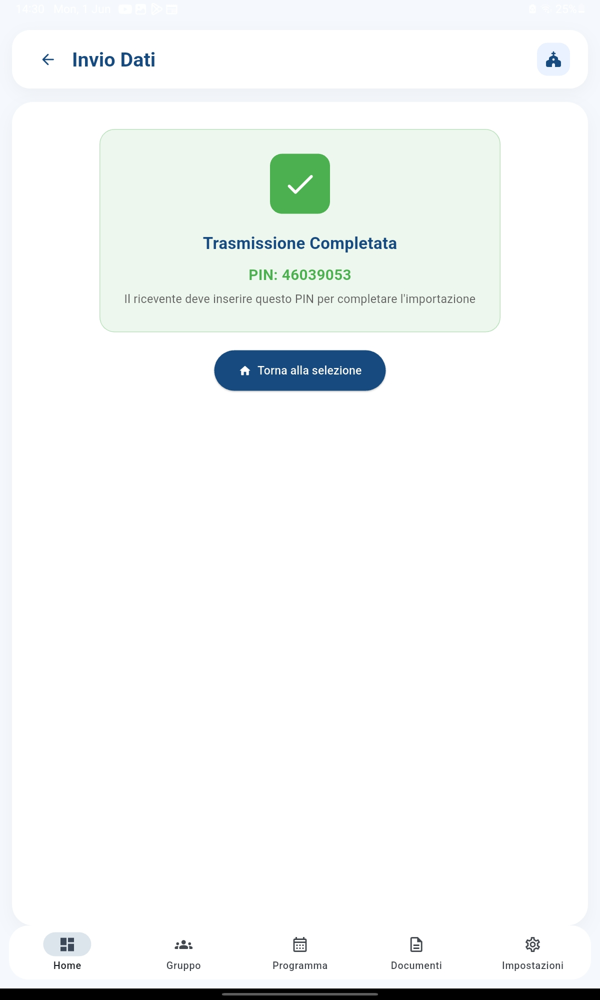
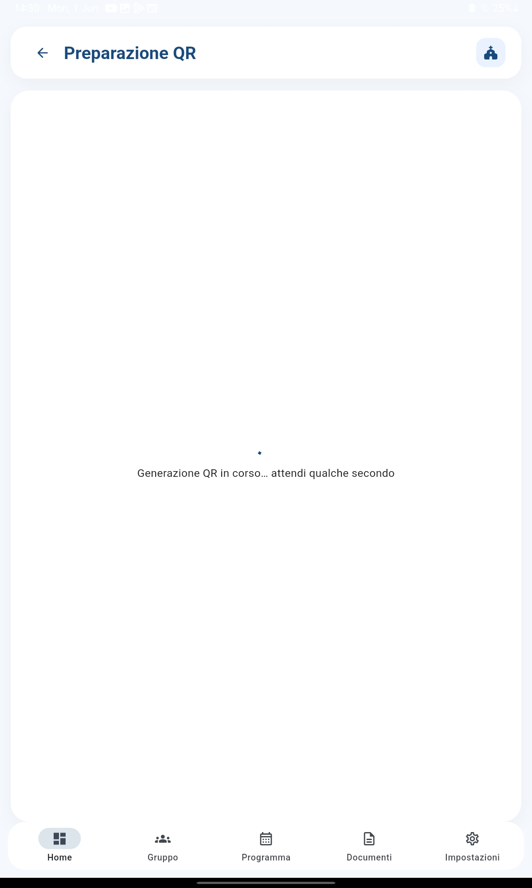

Scambia dati con altri catechisti in modo sicuro, senza internet e senza server: basta inquadrare un QR code
La Condivisione QR ti permette di inviare dati a un altro catechista semplicemente mostrando un QR code sul tuo telefono. Lui lo inquadra con la fotocamera del suo dispositivo e i dati vengono trasferiti. Il tutto è protetto da crittografia e da un PIN di sicurezza. Non serve internet, non serve un server centrale.
Selezioni esattamente quali moduli vuoi esportare: anagrafica ragazzi, presenze, documenti, ecc. Puoi scegliere tutto o solo ciò che serve.

Scegli un PIN numerico (4-6 cifre) che servirà per crittografare i dati. Senza questo PIN, nessuno potrà leggere le informazioni, neppure se intercetta il QR code.

L'app genera un QR code che contiene i dati crittografati. Lo mostri al collega che lo inquadra con la fotocamera del suo dispositivo.


Il collega scansiona il QR, inserisce il PIN che gli hai comunicato a voce, e i dati vengono importati nel suo CatechHub. L'app gestisce automaticamente eventuali conflitti con i dati esistenti.